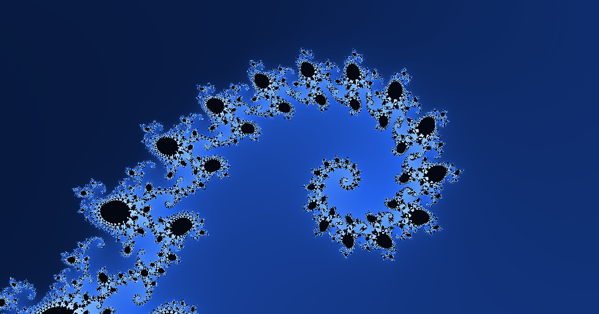

PhiStack en Termux
Gestiona 72 herramientas de ciberseguridad con menús interactivos, un catálogo declarativo y análisis de obsolescencia. Bilingüe ES/EN y listo para tu propio stack.

Del terminal a tu arsenal en 3 pasos
PhiStack combina un catálogo declarativo, un motor de instalación con verificación y menús interactivos modernos.
Catálogo declarativo
catalog/tools.json describe 72 herramientas con estado, descripción, instalación y verificación. Sin cadenas de if/elif.
Motor con verificación
Instala con pkg, git, pip o descargas con SHA256, y comprueba que cada herramienta quedó operativa.
Menús interactivos
Selección, búsqueda difusa y multi-instalación con InquirerPy. Modo CLI y modo interactivo.
Hecho para Termux, listo para ti
Todo lo que necesitas para montar y mantener tu arsenal de seguridad en Android.
Catálogo declarativo
JSON puro, fácil de extender con tu propio stack (OsintPhi, TorPhi, Lamdaphi…).
Análisis de obsolescencia
Cada herramienta marcada activa/legacy/obsoleta, con reemplazos modernos sugeridos.
Bilingüe ES/EN
Interfaz y documentación en dos idiomas con selector persistente.
Menús interactivos
Select, búsqueda difusa y checkbox multi-instalación con InquirerPy.
phi doctor
Diagnostica Python, pip, git, pkg y dependencias antes de instalar.
Tema Termux
Banner fractal espiral áurea, prompt de fish y paleta de colores propia.
Listo en menos de 2 minutos
Elige tu nivel y copia el bloque de comandos.
# 1. Actualizar e instalar dependencias
pkg update && pkg upgrade -y
pkg install git -y
# 2. Clonar e instalar
git clone https://github.com/sebastianl1/phistack.git
cd phistack
bash install.sh¿Primera vez con Termux? Instala la app desde F-Droid (no Google Play).
git clone https://github.com/sebastianl1/phistack.git
cd phistack
bash install.shEl instalador instala dependencias, crea el comando phi y valida el entorno.
Empieza a usar PhiStack
Comandos principales para gestionar tu arsenal desde el terminal.
phi # Menú interactivo
phi list # Listar herramientas
phi install nmap # Instalar una herramienta
phi remove hydra -y # Eliminar (sin confirmar)
phi doctor # Diagnosticar el sistema
phi theme # Cambiar banner / prompt72 herramientas analizadas
OSINT, escaneo, web, explotación, contraseñas, phishing, red, forense y utilidades. Marca obsoletas y sugiere reemplazos.
Informe completo de obsolescencia y mejoras. Ver el informe
Preguntas frecuentes
Resolvemos las dudas más comunes sobre PhiStack.
PhiStack es un gestor de stack para Termux: instala, elimina y analiza herramientas de ciberseguridad desde un catálogo declarativo con menús interactivos.
No. PhiStack usa los repositorios de Termux (pkg), Python, git y binarios de proyectos open source. Nada de root.
La versión de Google Play está desactualizada y abandonada. La oficial se mantiene en F-Droid.
Añade una entrada en catalog/tools.json (id, categoría, estado, pasos de instalación y verificación). El catálogo valida tu entrada automáticamente.
Activa (mantenida), legacy (funcional sin mantenimiento), obsoleta (archivada, con reemplazo sugerido), API (requiere key) o local.
Ejecuta phi update (hace git pull y refresca dependencias) o bash update.sh.
Ejecuta phi uninstall (borra binarios y configuración) o bash uninstall.sh.
Catálogo JSON + InquirerPy (menús profesionales) + rich (tablas y estados). 100% compatible con Termux.